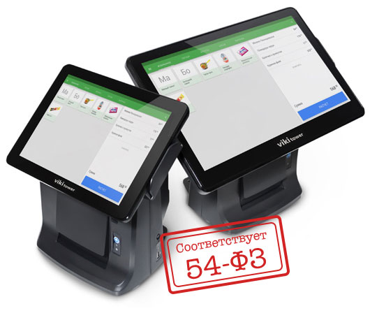
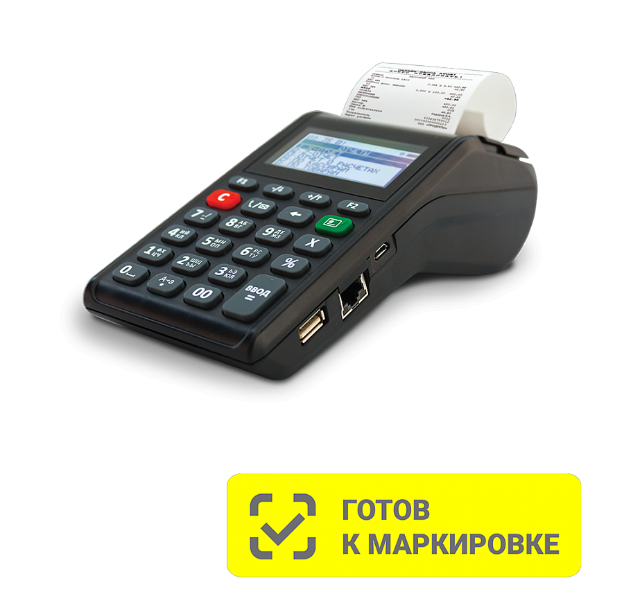
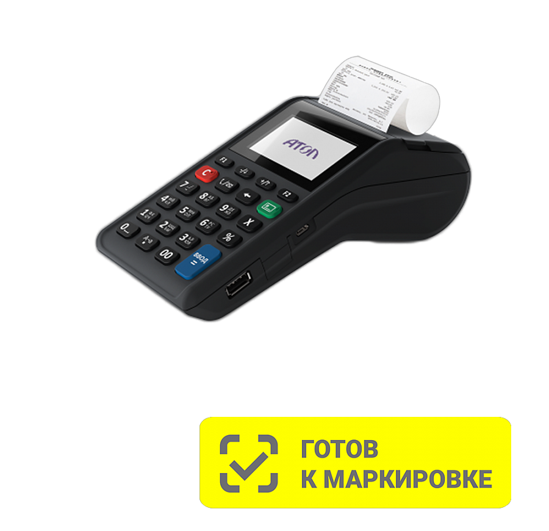

54-ФЗ о применении контрольно-кассовой техники
С 2017 года розничные магазины начинают напрямую отчитываются перед ФНС.
Для этого в магазинах устанавливают новые ККТ с подключением к интернету: сразу после продажи касса отправляет электронный чек на сервер оператора фискальных данных. ОФД обрабатывает, хранит и передает информацию в налоговую службу.
К 1 июля 2017 года предприятиям торговли нужно успеть: модернизировать старые кассы или купить новые, заключить договор с ОФД и приступить к работе по новым правилам.
С 2018 года кассы обязаны использовать предприниматели, работающие на ЕНВД, УСН и ПСН.
Информационный центр "МАКСИМУС" является партнером компании "Дримкас, которая занимается выпуском оборудования для автоматизации малой розничной торговли: кассовые терминалы с программным обеспечением, фискальные регистраторы, видеоконтроль кассиров. Уже в декабре 2016 вы сможете приобрести в главном офисе ИЦ "МАКСИМУС" онлайн-кассы Viki для 54-ФЗ и ЕГАИС.
Информационный центр "МАКСМУС" предлагает кассы Viki компании "ДРИМКАС". Техника находится в реестре ККТ, работает со всеми операторами фискальных данных и отправляет чеки на телефон и почту покупателя. Все модели ККТ доступны со встроенным фискальным накопителем или без него.
Кассы Viki
Онлайн-касса Viki Micro
Viki Micro – это компактная POS-система с сенсорным экраном и кассовой программой. Вам не понадобятся дополнительные экраны, клавиатуры или компьютеры. Прямо на кассе: приёмка алкоголя, продажа алкоголя и автоматическое заполнение алкогольного журнала по требованиям ЕГАИС.
В рекомендуемый комплект Viki Micro входит:
- Сенсорный моноблок с кассовой программой
- Кассовая программа Set Start
- Установленный транспортный модуль ЕГАИС
- 2D-сканер для считывания акцизных марок
- Фискальный регистратор Viki Print 57 K
Возможности Viki Micro:
- Приемка/продажа алкогольной продукции в ЕГАИС
- Автоматическое заполнение алкогольного журнала (выгрузка на USB флешку)
- Продажа товаров по штрихкоду
- Режим суммирующей кассы
- Загрузка товаров из Excel
- Выгрузка продаж в Excel
- Автоматическое обновление кассового ПО и УТМ через интернет
- Продажа весовых товаров
- Wi-Fi и Ethernet
- Поддержка товароучетных систем 1С (Рарус, Далион, УТ и т.п.)
- Оплата банковской картой (интегрированные и автономные банковские терминалы)
- Работа с товарами быстрого доступа
Стоимость комплекта: от 14500 рублей
Онлайн-касса Viki Classic
Возможности Viki Classic:
- Приемка алкогольной накладной в ЕГАИС
- Автоматическое заполнение алкогольного журнала
- Отправка данных о продаже алкогольной продукции в ЕГАИС
- Продажа любых товаров как по свободной цене, так и по штрихкоду
- Обмен данными с товароучетными системами (например, на базе 1С)
Стоимость комплекта: от 54700 рублей
Онлайн-касса Viki Tower
В рекомендуемый комплект Viki Micro входит:
- Специальный компьютер с кассовой программой
- Установленный транспортный модуль ЕГАИС
- Встроенный фискальный регистратор
- 2D сканер для считывания акцизных марок
- Денежный ящик
Стоимость комплекта: от 60200 рублей
Онлайн-касса Viki Mini
Закупайте и продавайте алкоголь по правилам ЕГАИС. Отправляйте сведения о продаже алкоголя прямо с кассы.
Закупайте алкоголь
С января 2016 каждый магазин, закупающий алкоголь, обязан подтверждать в ЕГАИС факт приемки алкогольной продукции. Через Viki Mini сделать это можно в 2-3 действия.
Продавайте алкоголь
Продавайте алкогольную продукцию, не нарушая законодательства. С июля 2016 каждый розничный магазин обязан подавать сведения в ЕГАИС о продаже алкоголя. В кассу Viki Mini уже установлен УТМ, осуществляющий отправку данных в ЕГАИС.
Продавайте другие товары
Viki Mini – это кассовое место, с помощью которого продают не только алкоголь, но и другие товары, отпускающиеся поштучно или на развес: продукты, сигареты, бытовую химию. В комплекте – все необходимое оборудование для ЕГАИС
Касса
Работайте с комфортом. Управляйте продажами в несколько действий. Четкий сенсорный экран, удобные для нажатий большие кнопки.
Кассовая программа
Сертифицирована в ФГУП «ЦентрИнформ». Сделана под требования ЕГАИС.
Фискальный регистратор
Соответствует требованиям ЕГАИС — умеет печатать QR-коды.
2D-сканер
С первого раза безошибочно отсканирует акцизную марку на бутылке.
Денежный ящик
Во время расчета с покупателем ящик открывается сам.
Стоимость комплекта: от 29900 рублей
Кассы Атол
Онлайн-касса Атол 91Ф
АТОЛ 91Ф - бюджетный вариант, позволяющий сэкономить не только на покупке, но и в процессе ее эксплуатации, благодаря низкой стоимости запасных частей. Интуитивно понятный интерфейс устройства позволит легко начать работу с кассой тем, кто раньше никогда не использовал ККТ. Ньюджер АТОЛ 91Ф может работать при температуре от -10С до +45С. Такой широкий температурный диапазон позволяет использовать устройство в неотапливаемых помещениях, таких как рыночные палатки, киоски, выставочные павильоны и торговые островки на улице. АТОЛ 91Ф работает с банковским пин-падом – клиенты могут быстро расплачиваться картой или телефоном. Чтобы подключить эквайринг кньюджеру, заключите договор и возьмите в аренду пин-падлюбого банка. АТОЛ 91Ф включена в реестр онлайн ККТ приказом ФНС № ЕД-7-20/927@ от 15.11.2017 и обладает большим выбором интерфейсов для передачи данных в ОФД.
Цена: 9000 рублей без ФН
Онлайн-касса Атол 91Ф Lite
Соответствует 54-ФЗ. АТОЛ 91Ф Lite включена в реестр онлайн ККТ приказом ФНС № ЕД-7-20/927@ от 15.11.2017 У ньюджера АТОЛ 91Ф Lite один USB-разъём для подключения сканера штрих-кода и банковского пин-пада, либо электронных весов АТОЛ MARTA, что обеспечивает начальный уровень автоматизации АТОЛ 91Ф Lite – самый бюджетный вариант в продуктовой линейке автономных касс
Цена: 7 000 руб. без ФН
Онлайн-касса Атол 92Ф
Ньюджер АТОЛ 92Ф имеет два USB-порта для подключения сканера штрих-кода и банковского пин-пада, что обеспечивает начальный уровень автоматизации. Широкий выбор интерфейсов - Wi-Fi, 2G, Ethernet - позволяет выбрать удобный способ для передачи информации оператору фискальных данных и в налоговую службу. АТОЛ 92Ф обеспечивает возможность автономной работы до 8 часов. Для тех, кто привык вести расчеты на калькуляторе. Клавиатура АТОЛ 92Ф разработана с учетом пожеланий пользователей и обладает большими клавишами с возможностью совершения операций в одно нажатие ("горячие" клавиши).
Цена: 9 000 руб. без ФН
Кассы Дримкас
Онлайн-Касса Ф
Компактная кнопочная онлайн-касса с цветным экраном. Подключается к товароучетным системам и интернет-магазину. Работает с дополнительным оборудованием и с модулем GPRS для точек, где не проведён интернет. Полностью закрывает вопрос 54-ФЗ, отправляет данные о продажах в ОФД, готова к новым изменениям в законодательстве. Онлайн-касса подключается к «Кабинету Дримкас». Из него можно управлять товарами, ценами, скидками и остатками. А наблюдать за продажами можно из любой точки мира. Удобный интерфейс упрощает постановку кассы на учет в налоговой. Касса Ф находится в государственном реестре контрольно-кассовой техники. Приказ ФНС России от Приказ ФНС России от 17.04.2018 № ЕД-7-20/220@.
Подробное описание здесь.
Стоимость: 10 900 рублей
Банковские терминалы для касс
Пинпад PAX SP30
Описание модели:
PAX SP30 — компактный пинпад с 4-х строчным большим цветным дисплеем. Принимайте оплату Visa, MasterCard, МИР, UnionPay, Apple Pay, Samsung Pay. Простое подключение и низкий процент без походов в банк
Достоинства:
- Упрощенное оформление документов;
- Решение в течение 5 рабочих дней;
- Без требований к обороту;
- Оптимизация расходов на оборудование;
- Комиссия банка за операцию — 1,8%.
Стоимость: 14200 рублей
Скачать прайс-лист на ККТ от 25.06.2017
Специалисты Сервисного центра «Максимус» окажут вам квалифицированную помощь в подборе нужной модели кассы Viki, и не только!Мы вам поможем заключить договор с оператором фискальных данных, получить квалифицированную усиленную подпись, зарегистрировать вашу кассу в ИФНС, Круглосуточная поддержка клиентов по телефону: 8 (800) 500-35-45.